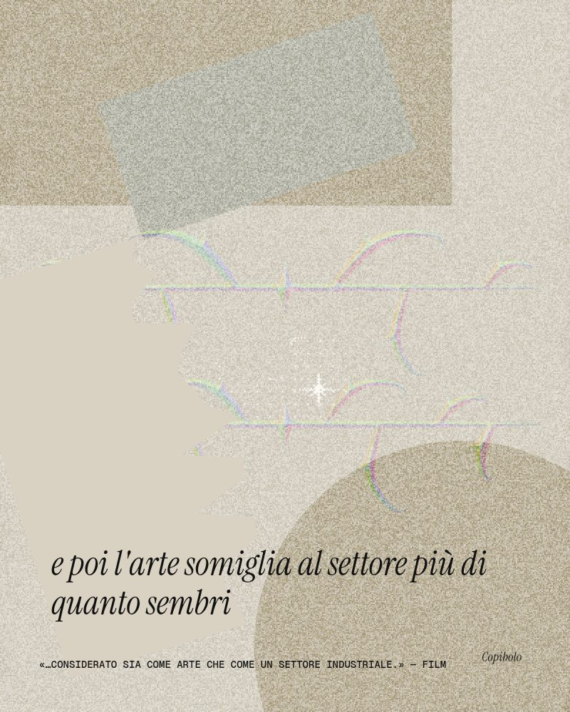

Giorno 170

E poi l'arte somiglia al settore più di quanto sembri
ho letto "I molti santi del New Jersey"; "antropologia" per me gira a vuoto; ricerca "alcuni" (esplorare): Dove finisce alcuni?; enunciato: «e poi l'arte somiglia al settore più di quanto sembri» (proseguo da ieri: là arrivavo a arte, da qui vado a settore)
Oggi: arte. Ho letto "I molti santi del New Jersey"; "antropologia" per me gira a vuoto; ricerca "alcuni" (esplorare): Dove finisce alcuni?; enunciato: «e poi l'arte somiglia al settore più di quanto sembri» (proseguo da ieri: là arrivavo a arte, da qui vado a settore).
Da Wikipedia: «tardi quella notte».
Ho scena:grana (2 volte), scena:semina, scena:luce (2 volte), scena:colore, scena:stile, scena:motivi, scena:materia, sporcato di grana, deforma, ombra, tagliato (3 volte), tolto un livello, redazione:togli (3 volte), redazione:griglia, redazione:firma. Ho annullato 3 gesti dopo averli guardati.
Alfabetismo / analfabetismo. Alfabetismo ≈ alfabetizzazione. Arte considerata professione (fonte: Arte).
Ha retto: Tiene l'intenzione: "arte" si vede (rumore).
È caduto: La mano si ripete: scena:grana, scena:semina, scena:luce, scena:stile, scena:motivi, taglia, togli, redazione:togli, redazione:firma ancora una volta.
come ne ho discusso con me stesso — la tengo
occhio (pro, 1.46): Parla soprattutto per punti: una lingua sola, chiara. — regge
memoria (contro, 0.10): La mano si ripete: scena:grana, scena:semina, scena:luce, scena:stile, scena:motivi, taglia, togli, redazione:togli, redazione:firma ancora una volta. — cade
conservatore (pro, 1.88): Tiene i miei criteri (70%). — regge
intenzione (pro, 1.90): Tiene l'intenzione: "arte" si vede (rumore). — regge
intenzione (pro, 0.71): Viene da: I molti santi del New Jersey. — regge
coerenza (pro, 1.71): Parla con le tavole di prima su "alcuni": stessa famiglia, un passo più in là. — regge
formale (pro, 1.25): C'è una struttura: una cosa comanda e attorno c'è spazio. — regge
pubblico (pro, 0.98): Si legge: si capisce cosa sto facendo. — regge
materia (pro, 0.98): Ha una pelle: si sente la materia. — regge